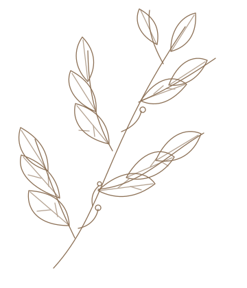

把日子过成喜欢的样子
有些答案，藏在那些不赶时间的日子里。在日常的缝隙中，我们或许能找到生活本来的模样。
CLOUDINK JOURNAL · 云砚手记
Notes on a considered life.
记录生活的细微，也保存技术的思考。
在喧嚣的世界里，留下一些慢下来的文字。

有些答案，藏在那些不赶时间的日子里。在日常的缝隙中，我们或许能找到生活本来的模样。
在信息过载的时代，空白不是缺席，而是一种选择。让思想发酵，也让文字更有呼吸感。
城市被雨水洗过，空气格外清澈。走一段熟悉又陌生的路，看看季节的转角，和重新开始的可能。
生活随笔 · 2026.10.28
有些答案，藏在那些不赶时间的日子里。
有一段时间，我总觉得生活需要更有效率。把每一天排得很满，好像只有不断向前，才算没有辜负时间。可后来我渐渐意识到，真正让人感到踏实的，往往不是完成了多少，而是是否认真地经历了这些日子。
早晨打开窗，风吹动书页。还没喝完的茶在桌边慢慢变凉。那些没有被记录的片刻，并不是空白。
生活的美好，常常藏在那些不赶时间的时刻里。
它可能是一阵风、一本书，或是一次不为目的的散步。
上周的一个傍晚，雨刚停，我出门走了走。空气里有泥土的味道，树叶上还挂着水珠，路灯已经亮起。那一刻我忽然觉得，生活其实不需要太多宏大的叙事，这些细小的瞬间，就足以构成一段值得珍藏的时光。
我们无法总是掌控生活的节奏，但至少可以选择如何看待它。把日子过成自己喜欢的样子，也许就是在平凡中发现值得珍惜的事物，然后愿意一次次地停下来，认真感受。
书刊式排版也应容纳技术内容。下面的示例用于检查代码和表格的阅读体验。
const journal = { title: 'CloudInk', intention: 'Keep a little room for thoughtful writing and everyday life.' };
console.log(journal.title);| 内容 | 设计原则 | 实际表现 |
|---|---|---|
| 正文 | 舒适的行宽与行距 | 优先保证长文阅读 |
| 交互 | 清晰、轻巧、可中断 | 尊重减少动态效果 |
慢慢写，认真生活。让每一篇文章，都有属于自己的呼吸。
ABOUT THIS STUDY
这是 CloudInk「棕褐书刊」设计原型。页面中的文章、作者和插画都是通用示例，正式网站将读取站点自己的内容与设置。
你可以切换明暗主题、关闭首页插画、搜索示例文章，也可以在手机尺寸下查看导航与阅读布局。
回到文章列表 ↗